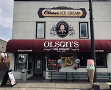
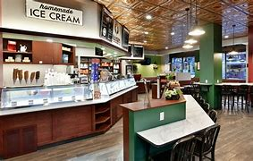

Olson’s Ice Cream

Olsons ice cream started in 1923 with Albert J. Olsen and his partner
making and selling ice cream and dairy products in Knapp Wisconsin.
In 1944, Olson moved with his family to Chippewa falls and kept their
business going there, in the same building where the ice cream shop stands
today! Eventually the Olson family transitioned to only producing ice cream.
In 2007, the Olson sold the company to the Hunt family, but their legacy and
reputation remain strong among the community.
More History - olsonsicecream.com

Average Rating: